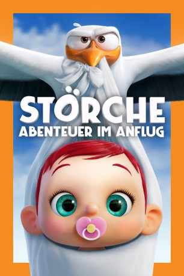

gesehen am 28.03.2017
gesehen am 28.03.2017Alternativ: Storks gesehen am 28.03.2017
 
 IMDB-Wertung: 6.9 / 10
IMDB-Wertung: 6.9 / 10  Metascore:
Metascore: 
Die Legende besagt schon seit Ewigkeiten, dass Babys von Störchen zu ihren Familien gebracht werden. Zumindest soll es früher so gewesen sein. Doch heute sieht die Realität ein klein wenig anders aus: Die Vögel agieren heute als Paketzusteller eines riesigen, international operierenden Online-Versandhauses. Storch Junior (Andy Samberg) fliegt dabei mit seinen Leistungen allen anderen meilenweit davon und macht sich bereits berechtigte Hoffnungen auf eine Beförderung. Als er eines Tages versehentlich die Babymaschine in Gang setzt, nimmt das Abenteuer seinen Lauf, denn durch sein Missgeschick geht auf einmal ein entzückendes, aber vollkommen unautorisiertes Mädchen vom Band. Junior und sein Kumpel Tulip (Katie Crown) müssen nun die Kleine ganz schnell loswerden, ehe es der Chef mitbekommt. Aber vielleicht können die Störche auf diesem Weg nicht nur eine Familienkrise entschärfen, sondern auch zu ihrer ursprünglichen Bestimmung zurückkehren.
Jahr: 2016
Dauer: 86 Minuten
FSK: 0
Land: USA Studio: Warner Bros.Tonspuren: DTS - ,
Untertitel: Deutsch, Englisch,
Auflösung: 1080p (1920x804) Größe: 5324 MB
Genre: Komödie, Abenteuer, Fantasy, Animation/Trick, Familie
Regisseur: Nicholas Stoller, Doug Sweetland
Drehbuch: Milan Kundera
Soundtrack:
Darsteller:
 Andy Samberg als Junior
Andy Samberg als Junior Kelsey Grammer als Hunter
Kelsey Grammer als Hunter Jennifer Aniston als Sarah Gardner
Jennifer Aniston als Sarah Gardner Ty Burrell als Henry Gardner
Ty Burrell als Henry Gardner Keegan-Michael Key als Alpha Wolf
Keegan-Michael Key als Alpha Wolf Jordan Peele als Beta Wolf
Jordan Peele als Beta Wolf Danny Trejo als Jasper
Danny Trejo als Jasper Awkwafina als Quail
Awkwafina als Quail Ike Barinholtz als Miscellaneous Storks
Ike Barinholtz als Miscellaneous Storks Jorma Taccone als Miscellaneous Storks
Jorma Taccone als Miscellaneous StorksDatei: X:\Kinder Filme (N-Z)\Störche - Abenteuer im Anflug (2016, FSK0, 1920x804).mkv seit 22.03.2017
Festplatte: Kinder-Filme+Trick
 Es gibt insgesamt 87 Filme in der Gruppe 'Kinder Filme (N-Z)'
Es gibt insgesamt 87 Filme in der Gruppe 'Kinder Filme (N-Z)'